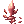
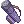
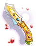

Illusion of Labyrinth
Main Quest
| Requirements | |
|---|---|
| Base Level: | 170 |
| Starting Point: | prt_maze01 99/31 |
| Rewards | |
| Experience: | None |
| Items: | Allows crafting of Illusion gears |
- The quest starts inside the Hidden Maze dungeon at
prt_maze01 99/31. You can get there using the Warper > Illusion Dungeons > Illusion of Labyrinth. - Speak with Irene and listen to her story. Select This will be easy to accept her request. You'll have to speak with the Guild Leader.
- Go near
prontera 212/320and Esmeralda will appear. Speak with her and inform her of the current situation. - Speak with Esmeralda again back at the Hidden Maze (Warper > Illusion Dungeons > Illusion of Labyrinth). Select Huh... well, okay" and then That's alright".
- Enter the Illusion of Labyrinth dungeon by clicking on the Twisted Crack and select Go over the crack.
- You'll be tasked to find the 4 bodies of the missing guild members. Their locations will be visible on your minimap. You also have to walk near them to make them visible.
- Once you're done, go back to the Hidden Maze. Speak with Esmeralda and select Alright, I'll leave for a bit. You will be warped outside once more.
- Go back inside the Hidden Maze and this time, all the guild members will appear.
- Speak with Andrea and select What are my benefits? and then Let's do it!.
You have now unlocked all the daily quests!


Daily Quests
Training Requests
| Requirements | |
|---|---|
| Base Level: | 170 |
| Starting Point: | prt_maze01 97/21 |
| Rewards | |
| Experience: | 43,750,000 (Base) and 28,437,500 (Job) per request |
| Items: | Different for each request. |
- Speak with Andrea and accept all his requests.
- Once you've completed any of the request, you can talk to Silvano to get your rewards.
Andrea's Revenge 1
- You will need to hunt 5 Chaotic Baphomet Juniors.
- Return to Silvano. You will be rewarded with 4
 Illusion Stone and some experience.
Illusion Stone and some experience.
Andrea's Revenge 2
- You will need to hunt 2 Chaotic Ghostrings.
- Return to Silvano. You will be rewarded with 4 Illusion Stone and some experience.
Anes's Revenge 1
- You will need to hunt 5 Chaotic Hunter Flies.
- Return to Silvano. You will be rewarded with 4 Illusion Stone and some experience.
Anes's Revenge 2
- You will need to hunt 5 Chaotic Killer Mantis.
- Return to Silvano. You will be rewarded with 4 Illusion Stone and some experience.
Silvano's Revenge 1
- You will need to hunt 5 Chaotic Mantis.
- Return to Silvano. You will be rewarded with 3 Pretty Little Candle and some experience.
Silvano's Revenge 2
- You will need to hunt 5 Chaotic Poporings.
- Return to Silvano. You will be rewarded with 3
 Medicinal Bag and some experience.
Medicinal Bag and some experience.
Cecilia's Revenge 1
- You will need to hunt 5 Chaotic Side Winders.
- Return to Silvano. You will be rewarded with 3
 Cold Holy Water and some experience.
Cold Holy Water and some experience.
Cecilia's Revenge 2
- You will need to hunt 3 Chaotic Stem Worms.
- Return to Silvano. You will be rewarded with 3
 Small Flashlight and some experience.
Small Flashlight and some experience.
Purification
| Requirements | |
|---|---|
| Base Level: | 170 |
| Starting Point: | prt_maze01 97/25 |
| Rewards | |
| Experience: | 62,500,000 (Base) and 40,625,000 (Job) |
| Items: | Different for each request. |
- Speak with Anes and accept all her request.
- You will have to hunt one of the following mob depending on the quest you receive (it is random):
- Chaotic Andrea, reward: 10 Pretty Little Candles
- Chaotic Anes, reward: 10 Medicinal Bags
- Chaotic Silvano, reward: 10 Cold Holy Waters
- Chaotic Cecilia, reward: 10 Small Flashlights
- Return to Silvano to get your reward.
Daily Quest Reset

As an exclusive feature to NovaRO, you are able to reset all your daily quests cooldowns.
That means you are able to farm Illusion Stones as much as you want on a single character, without having to create additional characters to bypass the cooldown.
To do so, talk to Osmundi. He can be found inside one of the following locations:
- Illusion of Moonlight dungeon .
- Illusion of Vampire dungeon .
- Illusion of Frozen dungeon .
- Illusion of Abyss dungeon .
- Illusion of Teddy Bear dungeon .
- Illusion of Luanda dungeon .
- Illusion of Twins dungeon .
- Illusion of Labyrinth dungeon .
- Illusion of Underwater dungeon .
They are separated in 5 distinct difficulty groups. Each reset will award you with a set amount of:
- Tier 1: Illusion of Moonlight and Illusion of Frozen.
- Reset Reward: 10 Illusion Stone and a choice between
 Moonlight Refine Box and
Moonlight Refine Box and  Frozen Refine Box
Frozen Refine Box
- Reset Reward:
- Tier 2: Illusion of Vampire and Illusion of Abyss
- Reset Reward: 12 Illusion Stone and a choice between
 Vampire Refine Box and
Vampire Refine Box and  Abyss Refine Box
Abyss Refine Box
- Reset Reward:
- Tier 3: Illusion of Teddy Bear and Illusion of Underwater - 1
- Reset Reward: 14 Illusion Stone and a choice between
 Teddy Bear Refine Box and
Teddy Bear Refine Box and  Underwater Refine Box
Underwater Refine Box
- Reset Reward:
- Tier 4: Illusion of Luanda and Illusion of Twins
- Reset Reward: 16 Illusion Stone and a choice between
 Luanda Refine Box and
Luanda Refine Box and  Twins Refine Box
Twins Refine Box
- Reset Reward:
- Tier 5: Illusion of Labyrinth and Illusion of Underwater - 2
- Reset Reward: 22 Illusion Stone and a choice between
 Labyrinth Refine Box and Underwater Refine Box
Labyrinth Refine Box and Underwater Refine Box
- Reset Reward:
The first reset of the day, for each group, will give a 12 Illusion Stone bonus.
Once you complete the dailies of one of the Tiers above, you can reset them. After a reset, these quests will not give any experience until their original 24 hours cooldown pass.
Each Tier can be completed and reset separately, but you cannot reset dailies from a single Illusion Dungeon without completing the others in their respective group.
MVP Spawn
To spawn the Chaotic Baphomet MVP, you have to kill 1500 mobs in the dungeon. There will then be an announce on the map when he appears.
Illusion Gears

Speak with Esmeralda (prt_fild01 141/367) at the entrance of the Hidden Maze dungeon.
You need to equip the base item to be able to craft its Illusion counterpart.
More information about these Illusion Enchants can be found in this page.
| Image | Name | Description | Crafting |
|---|---|---|---|

|
Illusion Morpheus's Hood [1] |
INT + 10, MDEF + 15, MaxSP + 20%.
INT + 5, MaxSP + 10%, DEF + 100.
Defense: 15 Location: Upper Weight: 20 Required Level: 130 Usable Jobs: All. |
|

|
Illusion Morpheus's Shawl [1] |
MaxSP + 10%, MDEF + 5.
Defense: 8 Weight: 60 Required Level: 130 Usable Jobs: All. |
|
| Illusion Morpheus's Ring [1] |
INT + 3, MaxSP + 5%.
Reduces variable casting time by 10%.
Defense: 0 Weight: 10 Required Level: 130 Usable Jobs: All. |
 4 Demonic Essences | |
| Illusion Morpheus's Bracelet [1] |
INT + 3, MaxSP + 5%.
MATK + 10%.
Defense: 0 Weight: 10 Required Level: 130 Usable Jobs: All. |
100 Mysterious Saps | |

|
Illusion Butcher [2] |
Increases long ranged physical damage by 2% every 15 base STR. ATK + 10%.
Attack: 210 Weight: 250 Weapon Level: 4 Required Level: 120 Usable Jobs: Gunslinger classes. |
 +7 Butcher [1]
150 Delicious Juices |

|
Illusion Tae Goo Lyeon [2] |
Perfect Dodge + 10. Increases long ranged physical damage by 3%.
Attack: 250 Weight: 200 Weapon Level: 4 Required Level: 120 Usable Jobs: Swordsman third classes. |
|

|
Illusion Gold Lux [2] |
HIT + 10.
ATK + 30.
Attack: 160 Weight: 180 Weapon Level: 4 Required Level: 120 Usable Jobs: Gunslinger classes. |
150 Snake's Venoms |
|  | Illusion Bazerald [2] |
INT + 5, MATK + 170. MATK + 50.
Attack: 120 Weight: 50 Property: Fire Weapon Level: 4 Required Level: 120 Usable Jobs: Swordsman classes, Archer classes, Thief classes, Mage classes, Merchant classes, Ninja classes, Soul Linker classes. |
150 Mantis Flowers |


 +7
+7  +7
+7  100
100 
 100
100 


 150
150 


 +7
+7 


 +7
+7
Illusion Enchants
Illusion equipment can be enchanted. For details, see here.
Refine Box
Completing Daily Quest Reset rewards the player with a Refine Box that can upgrade (or sometimes downgrade) a +4 or higher illusion equipment from the matching dungeon to +7 ~ +10.
Defeating an illusion MVP rewards the MVP player (to be confirmed) by chance with a Special Refine Box that can upgrade (or sometimes downgrade) a +4 or higher illusion equipment from the matching dungeon to +9 ~ +12.
You can exchange 25 Refine Box of a single dungeon for 1 Special Refine Box of the same dungeon from Illusion Merchant NPC ().
Note that:
- The chance of getting each refine level is not uniform. For example, there is a significantly lower chance of getting +10 than getting +7 when using a regular Refine Box.
- An upgrade is not guaranteed. For example, using a Refine Box on a +9 illusion equipment may result in a downgrade to +7.
Monsters
| Image | Name | Level | HP | Size / Race / Element |
|---|---|---|---|---|

|
Chaotic Andrea | 177 | 1,057,547 | Medium / Demi-Human / Neutral 4 |

|
Chaotic Anes | 177 | 1,057,444 | Medium / Demi-Human / Neutral 4 |
| Chaotic Silvano | 177 | 1,057,650 | Medium / Demi-Human / Neutral 4 | |

|
Chaotic Cecilia | 177 | 1,056,411 | Medium / Demi-Human / Neutral 4 |

|
Chaotic Baphomet Jr. | 177 | 1,057,444 | Small / Demon / Shadow 1 |

|
Chaotic Side Winder | 176 | 961,531 | Medium / Brute / Poison 1 |
| Chaotic Hunter Fly | 175 | 1,045,087 | Small / Insect / Wind 2 | |
| Chaotic Mantis | 174 | 1,039,216 | Medium / Insect / Earth 1 | |
| Chaotic Ghostring | 173 | 1,033,446 | Medium / Demon / Ghost 2 | |

|
Chaotic Killer Mantis | 177 | 1,058,167 | Medium / Insect / Earth 1 |
| Chaotic Poporing | 173 | 1,032,638 | Medium / Plant / Poison 3 | |
| Chaotic Stem Worm | 172 | 1,027,071 | Medium / Plant / Wind 1 | |

|
Chaotic Baphomet | 178 | 21,278,744 | Large / Demon / Shadow 3 |

Cards
| Card | Type | Effects |
|---|---|---|
 Chaotic Acolyte Card Chaotic Acolyte Card
|
Accessory Card (Left) |
|
 Chaotic Baphomet Junior Card Chaotic Baphomet Junior Card
|
Shoes Card |
CRIT + 1 every 15 base AGI.
|
 Chaotic Sidewinder Card Chaotic Sidewinder Card
|
Shield Card |
Reduces damage taken from poison property monsters by 15%. |
 Chaotic Hunter Fly Card Chaotic Hunter Fly Card
|
Shield Card |
Reduces damage taken from wind property monsters by 15%. |
 Chaotic Mantis Card Chaotic Mantis Card
|
Accessory Card |
STR + 3.
|
 Chaotic Ghostring Card Chaotic Ghostring Card
|
Weapon Card |
ATK + 20.
|
 Chaotic Killer Mantis Card Chaotic Killer Mantis Card
|
Accessory Card |
Increases critical damage by 3%.
|
 Chaotic Poporing Card Chaotic Poporing Card
|
Shield Card |
Reduces damage taken from water property monsters by 15%. |
 Chaotic Stem Worm Card Chaotic Stem Worm Card
|
Garment Card |
HIT + 10. |
 Chaotic Baphomet Card Chaotic Baphomet Card
|
Armor Card |
ATK + 25%. |